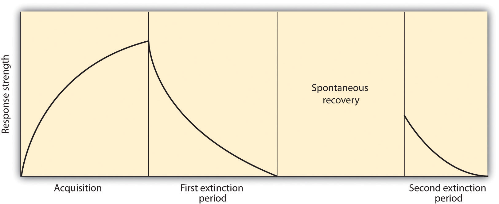

In the early part of the 20th century, Russian physiologist Ivan Pavlov (1849–1936) was studying the digestive system of dogs when he noticed an interesting behavioral phenomenon: The dogs began to salivate when the lab technicians who normally fed them entered the room, even though the dogs had not yet received any food. Pavlov realized that the dogs were salivating because they knew that they were about to be fed; the dogs had begun to associate the arrival of the technicians with the food that soon followed their appearance in the room.
Figure 7.2 Ivan Pavlov

Ivan Pavlov’s research made substantial contributions to our understanding of learning.
Source: Photo courtesy of LIFE Photo Archive, http://commons.wikimedia.org/wiki/File:Ivan_Pavlov_LIFE.jpg.
With his team of researchers, Pavlov began studying this process in more detail. He conducted a series of experiments in which, over a number of trials, dogs were exposed to a sound immediately before receiving food. He systematically controlled the onset of the sound and the timing of the delivery of the food, and recorded the amount of the dogs’ salivation. Initially the dogs salivated only when they saw or smelled the food, but after several pairings of the sound and the food, the dogs began to salivate as soon as they heard the sound. The animals had learned to associate the sound with the food that followed.
Pavlov had identified a fundamental associative learning process called classical conditioning. Classical conditioningLearning that occurs when a neutral stimulus (e.g., a tone) becomes associated with a stimulus (e.g., food) that naturally produces a behavior. refers to learning that occurs when a neutral stimulus (e.g., a tone) becomes associated with a stimulus (e.g., food) that naturally produces a behavior. After the association is learned, the previously neutral stimulus is sufficient to produce the behavior.
As you can see in Figure 7.3 "4-Panel Image of Whistle and Dog", psychologists use specific terms to identify the stimuli and the responses in classical conditioning. The unconditioned stimulus (US)Something (such as food) that naturally triggers a response. is something (such as food) that triggers a natural occurring response, and the unconditioned response (UR)The naturally occuring response (such as salivation) that follows the unconditioned stimulus. is the naturally occurring response (such as salivation) that follows the unconditioned stimulus. The conditioned stimulus (CS)A neutral stimulus that, after being repeatedly presented prior to the unconditioned stimulus, begins to evoke a similar response as the unconditioned stimulus. is a neutral stimulus that, after being repeatedly presented prior to the unconditioned stimulus, evokes a similar response as the unconditioned stimulus. In Pavlov’s experiment, the sound of the tone served as the conditioned stimulus that, after learning, produced the conditioned response (CR)An acquired response to the formerly neutral stimulus., which is the acquired response to the formerly neutral stimulus. Note that the UR and the CR are the same behavior—in this case salivation—but they are given different names because they are produced by different stimuli (the US and the CS, respectively).
Figure 7.3 4-Panel Image of Whistle and Dog

Top left: Before conditioning, the unconditioned stimulus (US) naturally produces the unconditioned response (UR). Top right: Before conditioning, the neutral stimulus (the whistle) does not produce the salivation response. Bottom left: The unconditioned stimulus (US), in this case the food, is repeatedly presented immediately after the neutral stimulus. Bottom right: After learning, the neutral stimulus (now known as the conditioned stimulus or CS), is sufficient to produce the conditioned responses (CR).
Conditioning is evolutionarily beneficial because it allows organisms to develop expectations that help them prepare for both good and bad events. Imagine, for instance, that an animal first smells a new food, eats it, and then gets sick. If the animal can learn to associate the smell (CS) with the food (US), then it will quickly learn that the food creates the negative outcome, and not eat it the next time.
After he had demonstrated that learning could occur through association, Pavlov moved on to study the variables that influenced the strength and the persistence of conditioning. In some studies, after the conditioning had taken place, Pavlov presented the sound repeatedly but without presenting the food afterward. Figure 7.4 "Acquisition, Extinction, and Spontaneous Recovery" shows what happened. As you can see, after the intial acquisition (learning) phase in which the conditioning occurred, when the CS was then presented alone, the behavior rapidly decreased—the dogs salivated less and less to the sound, and eventually the sound did not elicit salivation at all. ExtinctionThe reduction in responding that occurs when the conditioned stimulus is presented repeatedly without the unconditioned stimulus. refers to the reduction in responding that occurs when the conditioned stimulus is presented repeatedly without the unconditioned stimulus.
Figure 7.4 Acquisition, Extinction, and Spontaneous Recovery
Acquisition: The CS and the US are repeatedly paired together and behavior increases. Extinction: The CS is repeatedly presented alone, and the behavior slowly decreases. Spontaneous recovery: After a pause, when the CS is again presented alone, the behavior may again occur and then again show extinction.
Although at the end of the first extinction period the CS was no longer producing salivation, the effects of conditioning had not entirely disappeared. Pavlov found that, after a pause, sounding the tone again elicited salivation, although to a lesser extent than before extinction took place. The increase in responding to the CS following a pause after extinction is known as spontaneous recoveryThe increase in responding to the conditioned stimulus (CS) after a pause that follows extinction.. When Pavlov again presented the CS alone, the behavior again showed extinction until it disappeared again.
Although the behavior has disappeared, extinction is never complete. If conditioning is again attempted, the animal will learn the new associations much faster than it did the first time.
Pavlov also experimented with presenting new stimuli that were similar, but not identical to, the original conditioned stimulus. For instance, if the dog had been conditioned to being scratched before the food arrived, the stimulus would be changed to being rubbed rather than scratched. He found that the dogs also salivated upon experiencing the similar stimulus, a process known as generalization. GeneralizationThe tendency to respond to stimuli that resemble the original conditioned stimulus. refers to the tendency to respond to stimuli that resemble the original conditioned stimulus. The ability to generalize has important evolutionary significance. If we eat some red berries and they make us sick, it would be a good idea to think twice before we eat some purple berries. Although the berries are not exactly the same, they nevertheless are similar and may have the same negative properties.
Lewicki (1985)Lewicki, P. (1985). Nonconscious biasing effects of single instances on subsequent judgments. Journal of Personality and Social Psychology, 48, 563–574. conducted research that demonstrated the influence of stimulus generalization and how quickly and easily it can happen. In his experiment, high school students first had a brief interaction with a female experimenter who had short hair and glasses. The study was set up so that the students had to ask the experimenter a question, and (according to random assignment) the experimenter responded either in a negative way or a neutral way toward the students. Then the students were told to go into a second room in which two experimenters were present, and to approach either one of them. However, the researchers arranged it so that one of the two experimenters looked a lot like the original experimenter, while the other one did not (she had longer hair and no glasses). The students were significantly more likely to avoid the experimenter who looked like the earlier experimenter when that experimenter had been negative to them than when she had treated them more neutrally. The participants showed stimulus generalization such that the new, similar-looking experimenter created the same negative response in the participants as had the experimenter in the prior session.
The flip side of generalization is discriminationThe tendency to respond differently to stimuli that are similar, but not identical.—the tendency to respond differently to stimuli that are similar but not identical. Pavlov’s dogs quickly learned, for example, to salivate when they heard the specific tone that had preceded food, but not upon hearing similar tones that had never been associated with food. Discrimination is also useful—if we do try the purple berries, and if they do not make us sick, we will be able to make the distinction in the future. And we can learn that although the two people in our class, Courtney and Sarah, may look a lot alike, they are nevertheless different people with different personalities.
In some cases, an existing conditioned stimulus can serve as an unconditioned stimulus for a pairing with a new conditioned stimulus—a process known as second-order conditioningConditioning that occurs when an existing conditioned stimulus serves as an unconditioned stimulus for a new conditioned stimulus.. In one of Pavlov’s studies, for instance, he first conditioned the dogs to salivate to a sound, and then repeatedly paired a new CS, a black square, with the sound. Eventually he found that the dogs would salivate at the sight of the black square alone, even though it had never been directly associated with the food. Secondary conditioners in everyday life include our attractions to things that stand for or remind us of something else, such as when we feel good on a Friday because it has become associated with the paycheck that we receive on that day, which itself is a conditioned stimulus for the pleasures that the paycheck buys us.
As we have seen in Chapter 1 "Introducing Psychology", scientists associated with the behavioralist school argued that all learning is driven by experience, and that nature plays no role. Classical conditioning, which is based on learning through experience, represents an example of the importance of the environment. But classical conditioning cannot be understood entirely in terms of experience. Nature also plays a part, as our evolutionary history has made us better able to learn some associations than others.
Clinical psychologists make use of classical conditioning to explain the learning of a phobiaA strong and irrational fear of a specific object, activity, or situation.—a strong and irrational fear of a specific object, activity, or situation. For example, driving a car is a neutral event that would not normally elicit a fear response in most people. But if a person were to experience a panic attack in which he suddenly experienced strong negative emotions while driving, he may learn to associate driving with the panic response. The driving has become the CS that now creates the fear response.
Psychologists have also discovered that people do not develop phobias to just anything. Although people may in some cases develop a driving phobia, they are more likely to develop phobias toward objects (such as snakes, spiders, heights, and open spaces) that have been dangerous to people in the past. In modern life, it is rare for humans to be bitten by spiders or snakes, to fall from trees or buildings, or to be attacked by a predator in an open area. Being injured while riding in a car or being cut by a knife are much more likely. But in our evolutionary past, the potential of being bitten by snakes or spiders, falling out of a tree, or being trapped in an open space were important evolutionary concerns, and therefore humans are still evolutionarily prepared to learn these associations over others (Öhman & Mineka, 2001; LoBue & DeLoache, 2010).Öhman, A., & Mineka, S. (2001). Fears, phobias, and preparedness: Toward an evolved module of fear and fear learning. Psychological Review, 108(3), 483–522; LoBue, V., & DeLoache, J. S. (2010). Superior detection of threat-relevant stimuli in infancy. Developmental Science, 13(1), 221–228.
Another evolutionarily important type of conditioning is conditioning related to food. In his important research on food conditioning, John Garcia and his colleagues (Garcia, Kimeldorf, & Koelling, 1955; Garcia, Ervin, & Koelling, 1966)Garcia, J., Kimeldorf, D. J., & Koelling, R. A. (1955). Conditioned aversion to saccharin resulting from exposure to gamma radiation. Science, 122, 157–158; Garcia, J., Ervin, F. R., & Koelling, R. A. (1966). Learning with prolonged delay of reinforcement. Psychonomic Science, 5(3), 121–122. attempted to condition rats by presenting either a taste, a sight, or a sound as a neutral stimulus before the rats were given drugs (the US) that made them nauseous. Garcia discovered that taste conditioning was extremely powerful—the rat learned to avoid the taste associated with illness, even if the illness occurred several hours later. But conditioning the behavioral response of nausea to a sight or a sound was much more difficult. These results contradicted the idea that conditioning occurs entirely as a result of environmental events, such that it would occur equally for any kind of unconditioned stimulus that followed any kind of conditioned stimulus. Rather, Garcia’s research showed that genetics matters—organisms are evolutionarily prepared to learn some associations more easily than others. You can see that the ability to associate smells with illness is an important survival mechanism, allowing the organism to quickly learn to avoid foods that are poisonous.
Classical conditioning has also been used to help explain the experience of posttraumatic stress disorder (PTSD), as in the case of P. K. Philips described in the chapter opener. PTSD is a severe anxiety disorder that can develop after exposure to a fearful event, such as the threat of death (American Psychiatric Association, 1994).American Psychiatric Association. (2000). Diagnostic and statistical manual of mental disorders (4th ed., text rev.). Washington, DC: Author. PTSD occurs when the individual develops a strong association between the situational factors that surrounded the traumatic event (e.g., military uniforms or the sounds or smells of war) and the US (the fearful trauma itself). As a result of the conditioning, being exposed to, or even thinking about the situation in which the trauma occurred (the CS), becomes sufficient to produce the CR of severe anxiety (Keane, Zimering, & Caddell, 1985).Keane, T. M., Zimering, R. T., & Caddell, J. M. (1985). A behavioral formulation of posttraumatic stress disorder in Vietnam veterans. The Behavior Therapist, 8(1), 9–12.
PTSD develops because the emotions experienced during the event have produced neural activity in the amygdala and created strong conditioned learning. In addition to the strong conditioning that people with PTSD experience, they also show slower extinction in classical conditioning tasks (Milad et al., 2009).Milad, M. R., Pitman, R. K., Ellis, C. B., Gold, A. L., Shin, L. M., Lasko, N. B.,…Rauch, S. L. (2009). Neurobiological basis of failure to recall extinction memory in posttraumatic stress disorder. Biological Psychiatry, 66(12), 1075–82. In short, people with PTSD have developed very strong associations with the events surrounding the trauma and are also slow to show extinction to the conditioned stimulus.